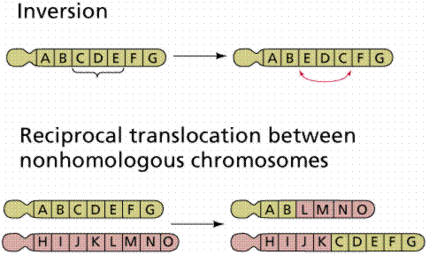

Finding the genes | The modern view of the gene | Interactions among genes
Environment and gene expression | Polygenic inheritance | Pleiotropy
Genes and chromosomes | Chromosome abnormalities | Links
Between 1884 (the year Mendel died) and 1888 details of mitosis and meiosis were reported, the cell nucleus was identified as the location of the genetic material, and "qualities" were even proposed to be transmitted on chromosomes to daughter cells at mitosis. In 1903 Walter Sutton and Theodore Boveri formally proposed that chromosomes contain the genes. The Chromosome Theory of Inheritance is one of the foundations of genetics and explains the physical reality of Mendel's principles of inheritance.
Fruit Fly, Drosophila melanogaster, (SEM X60). This image is copyright Dennis Kunkel at www.DennisKunkel.com, used with permission.
The location of many genes (Mendel's factors) was determined by Thomas Hunt Morgan and his coworkers in the early 1900's. Morgan's experimental organism was the fruit fly (Drosophila melanogaster). Fruit flies are ideal organisms for genetics, having a small size, ease of care, susceptibility to mutations, and short (7-9 day) generation time. The role of chromosomes in determination of sex was deduced by Morgan from work on fruit flies.
During Metaphase I, homologous chromosomes will line up. A karyotype can be made by cutting and arranging photomicrographs of the homologous chromosomes thus revealed at Metaphase I. Two types of chromosome pairs occur. Autosomes resemble each other in size and placement of the centromere, for example pairs of chromosome 21 are the same size, while pairs of chromosome 9 are of a different size from pair 21. Sex chromosomes may differ in their size, depending on the species of the organism they are from. In humans and Drosophila, males have a smaller sex chromosome, termed the Y, and a larger one, termed the X. Males are thus XY, and are termed heterogametic. Females are XX, and are termed homogametic. In grasshoppers, which Sutton studied in discovering chromosomes, there is no Y, only the X chromosome in males. Females are XX, while males are denoted as XO. Other organisms (notably birds, moths and butterflies) have males homogametic and females heterogametic. Males (if heterogametic) contribute either an X or Y to the offspring, while females contribute either X. The male thus determines the sex of the offspring. Remember that in meiosis, each chromosome is replicated and one copy sent to each gamete.
Morgan discovered a mutant eye color and attempted to use this mutant as a recessive to duplicate Mendel's results. He failed, instead of achieving a 3:1 F2 ratio the ratio was closer to 4:1 (red to white). Most mutations are usually recessive, thus the appearance of the white mutant presented Morgan a chance to test Mendel's ratios on animals. The F1 generation also had no white eyed females. Morgan hypothesized that the gene for eye color was only on the X chromosome, specifically in that region of the X that had no corresponding region on the Y. White eyed fruit flies were also more likely to die prior to adulthood, thus explaining the altered ratios. Normally eyes are red, but a variant (white) eyed was detected and used in genetic study. Cross a homozygous white eyed male with a homozygous red eyed female, and all the offspring have red eyes. Red is dominant over white. However, cross a homozygous white eyed female with a red eyed male, and the unexpected results show all the males have white eyes and all the females red eyes. This can be explained if the eye color gene is on the X chromosome.
Explanation
If the gene for eye color is on the X chromosome, the red eyed male in the second cross will pass his red eyed X to only his daughters, who in turn received only a recessive white-carrying X from their mother. Thus all females had red eyes like their father. Since the male fruit fly passes only the Y to his sons, their eye color is determined entirely by the single X chromosome they receive from their mother (in this case white). Thus all the males in the second cross were white eyed.
These experiments introduced the concept of sex-linkage, the occurrence of genes on that part of the X that lack a corresponding location on the Y. Sex-linked recessives (such as white eyes in fruit flies, hemophilia, baldness, and colorblindness in humans) occur more commonly in males, since there is no chance of them being heterozygous. Such a condition is termed hemizygous.

Inheritance of eye color in fruit flies. Images from Purves et al., Life: The Science of Biology, 4th Edition, by Sinauer Associates (www.sinauer.com) and WH Freeman (www.whfreeman.com), used with permission.
Characteristics of X-linked Traits
1. Phenotypic expression more common in males
2. Sons cannot inherit the trait from their fathers, but daughters can.
Sons inherit their Y chromosome from their father.
Only a few genes have been identified on the Y chromosome, among them the testis-determining factor (TDF) that promotes development of the male phenotype.
Barr bodies are interpreted as inactivated X chromosomes in mammalian females. Since females have two X chromosomes, the Lyon hypothesis suggests that one or the other X is inactivated in each somatic (non-reproductive) cell during embryonic development. Cells mitotically produced from these embryonic cells likewise have the same inactivated X chromosome.
The role of deactivated X chromosomes in mammalian female development. The above image is from the BIO 181 site at the University of Arizona (http://www.blc.arizona.edu:80/marty/181/181Lectures96/Figures/MolBiol/barr.GIF).
Barr bodies (b) in mammalian cells. The above image is from http://Spock.gc.peachnet.edu/Biology/pictures/cb062s.jpg.
Calico cats (sometimes called tortoiseshell) are almost always female since the calico trait is caused by some areas of the cat's fur expressing one allele and others expressing the other color. Can there be a male tortoiseshell cat? How would such a cat get its genes? Remember that fur color in cats is a sex-linked feature. Would the male calico be fertile or sterile?
While Mendel discussed traits, we now know that genes are segments of the DNA that code for specific proteins. These proteins are responsible for the expression of the phenotype. The basic principles of segregation and independent assortment as worked out by Mendel are applicable even for sex-linked traits.
Codominant alleles
Codominant alleles occur when rather than expressing an intermediate phenotype, the heterozygotes express both homozygous phenotypes. An example is in human ABO blood types, the heterozygote AB type manufactures antibodies to both A and B types. Blood Type A people manufacture only anti-B antibodies, while type B people make only anti-A antibodies. Codominant alleles are both expressed. Heterozygotes for codominant alleles fully express both alleles. Blood type AB individuals produce both A and B antigens. Since neither A nor B is dominant over the other and they are both dominant over O they are said to be codominant.
Incomplete dominance
Incomplete dominance is a condition when neither allele is dominant over the other. The condition is recognized by the heterozygotes expressing an intermediate phenotype relative to the parental phenotypes. If a red flowered plant is crossed with a white flowered one, the progeny will all be pink. When pink is crossed with pink, the progeny are 1 red, 2 pink, and 1 white.
Inheritance of flower color in snapdragons. Image from Purves et al., Life: The Science of Biology, 4th Edition, by Sinauer Associates (www.sinauer.com) and WH Freeman (www.whfreeman.com), used with permission.
Flower color in snapdragons is an example of this pattern. Cross a true-breeding red strain with a true-breeding white strain and the F1 are all pink (heterozygotes). Self-fertilize the F1 and you get an F2 ratio of 1 red: 2 pink: 1 white. This would not happen if true blending had occurred (blending cannot explain traits such as red or white skipping a generation and pink flowers crossed with pink flowers should produce ONLY pink flowers).
Multiple alleles
Many genes have more than two alleles (even though any one diploid individual can only have at most two alleles for any gene), such as the ABO blood groups in humans, which are an example of multiple alleles. Multiple alleles result from different mutations of the same gene. Coat color in rabbits is determined by four alleles. Human ABO blood types are determined by alleles A, B, and O. A and B are codominants which are both dominant over O. The only possible genotype for a type O person is OO. Type A people have either AA or AO genotypes. Type B people have either BB or BO genotypes. Type AB have only the AB (heterozygous) genotype. The A and B alleles of gene I produce slightly different glycoproteins (antigens) that are on the surface of each cell. Homozygous A individuals have only the A antigen, homozygous B individuals have only the B antigen, homozygous O individuals produce neither antigen, while a fourth phenotype (AB) produces both A and B antigens.
While one gene may make only one protein, the effects of those proteins usually interact (for example widow's peak may be masked by expression of the baldness gene). Novel phenotypes often result from the interactions of two genes, as in the case of the comb in chickens. The single comb is produced only by the rrpp genotype. Rose comb (b) results from R_pp. (_ can be either R or r). Pea comb (c) results from rrP_. Walnut comb, a novel phenotype, is produced when the genotype has at least one dominant of each gene (R_P_).
Epistasis
Epistasis is the term applied when one gene interferes with the expression of another (as in the baldness/widow's peak mentioned earlier). Bateson reported a different phenotypic ratio in sweet pea than could be explained by simple Mendelian inheritance. This ratio is 9:7 instead of the 9:3:3:1 one would expect of a dihybrid cross between heterozygotes. Of the two genes (C and P), when either is homozygous recessive (cc or pp) that gene is epistatic to (or hides) the other. To get purple flowers one must have both C and P alleles present.
Phenotypes are always affected by their environment. In buttercup (Ranunculus peltatus), leaves below water-level are finely divided and those above water-level are broad, floating, photosynthetic leaf-like leaves. Siamese cats are darker on their extremities, due to temperature effects on phenotypic expression. Expression of phenotype is a result of interaction between genes and environment. Siamese cats and Himalayan rabbits both animals have dark colored fur on their extremities. This is caused by an allele that controls pigment production being able only to function at the lower temperatures of those extremities. Environment determines the phenotypic pattern of expression.
Polygenic inheritance is a pattern responsible for many features that seem simple on the surface. Many traits such as height, shape, weight, color, and metabolic rate are governed by the cumulative effects of many genes. Polygenic traits are not expressed as absolute or discrete characters, as was the case with Mendel's pea plant traits. Instead, polygenic traits are recognizable by their expression as a gradation of small differences (a continuous variation). The results form a bell shaped curve, with a mean value and extremes in either direction.
Height in humans is a polygenic trait, as is color in wheat kernels. Height in humans is NOT discontinuous. If you line up the entire class a continuum of variation is evident, with an average height and extremes in variation (very short [vertically challenged?] and very tall [vertically enhanced]). Traits showing continuous variation are usually controlled by the additive effects of two or more separate gene pairs. This is an example of polygenic inheritance. The inheritance of EACH gene follows Mendelian rules.
Usually polygenic traits are distinguished by
Human polygenic traits include
Click here to view graphics about human polygenic inheritance from McGill University's Genetics pages.
The role of many genes (polygenic inheritance) in production of a continuum of phenotypes. Images from Purves et al., Life: The Science of Biology, 4th Edition, by Sinauer Associates (www.sinauer.com) and WH Freeman (www.whfreeman.com), used with permission.
Pleiotropy is the effect of a single gene on more than one characteristic. An example is the "frizzle-trait" in chickens. The primary result of this gene is the production of defective feathers. Secondary results are both good and bad; good include increased adaptation to warm temperatures, bad include increased metabolic rate, decreased egg-laying, changes in heart, kidney and spleen. Cats that are white with blue eyes are often deaf, white cats with a blue and an yellow-orange eye are deaf on the side with the blue eye. Sickle-cell anemia is a human disease originating in warm lowland tropical areas where malaria is common. Sickle-celled individuals suffer from a number of problems, all of which are pleiotropic effects of the sickle-cell allele.
Linkage occurs when genes are on the same chromosome. Remember that sex-linked genes are on the X chromosome, one of the sex chromosomes. Linkage groups are invariably the same number as the pairs of homologous chromosomes an organism possesses. Recombination occurs when crossing-over has broken linkage groups, as in the case of the genes for wing size and body color that Morgan studied. Chromosome mapping was originally based on the frequencies of recombination between alleles.
Since mutations can be induced (by radiation or chemicals), Morgan and his coworkers were able to cause new alleles to form by subjecting fruit flies to mutagens (agents of mutation, or mutation generators). Genes are located on specific regions of a certain chromosome, termed the gene locus (plural: loci). A gene therefore is a specific segment of the DNA molecule.
Alfred Sturtevant, while an undergraduate student in Morgan's lab, postulated that crossing-over would be less common between genes adjacent to each other on the same chromosome and that it should be possible to plot the sequence of genes along a fruit fly chromosome by using crossing-over frequencies. Distances on gene maps are expressed in map units (one map unit = 1 recombinant per 100 fertilized eggs; or a 1% chance of recombination).
The map for Drosophila melanogaster chromosomes is well known (click here to view the main map). Note that eye color and aristae length are far apart, as indicated by the occurrence of more recombinants (crossing-overs) between them, while wing length is closer to eye shape (as indicated by the low frequency of recombination between these two features).
Figure A illustrates the fruit fly chromosomes at metaphase; figure B shows a polytene chromosome. The above image is from Around the Genome (at http://fly2.berkeley.edu/BDGP/publications/Around_the_Genomes.html).
Chromosome abnormalities include inversion, insertion, duplication, and deletion. These are types of mutations. Since DNA is information, and information typically has a beginning point, an inversion would produce an inactive or altered protein. Likewise deletion or duplication will alter the gene product.

Chromosomal mutations. Images from Purves et al., Life: The Science of Biology, 4th Edition, by Sinauer Associates (www.sinauer.com) and WH Freeman (www.whfreeman.com), used with permission.
Polygenic Inheritance (McGill University).
The Drosophila Project A report on the fruit fly and it's contribution to the Genome Project. Maps and some illustrations.
FlyBase (at Harvard) A plethora of links about everyone's fave fly.
Back to Table of Contents | Go To HUMAN GENETICS
Email: mj.farabee@emcmail.maricopa.edu
Last modified:
The URL of this page is:
{kind=link}
{kind=link}